Design strategist · Mumbai
I make big financial apps feel like one product.
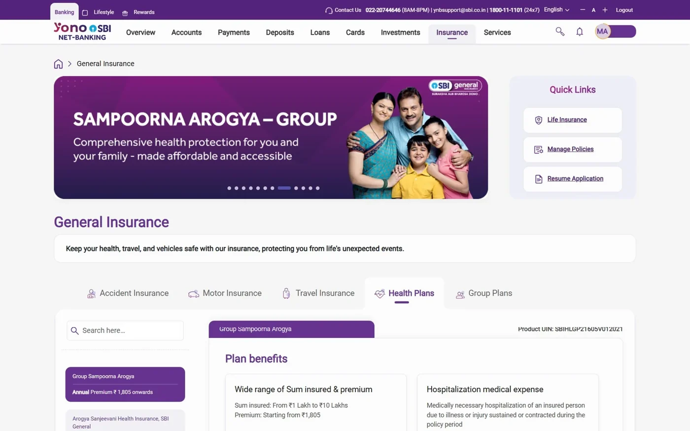
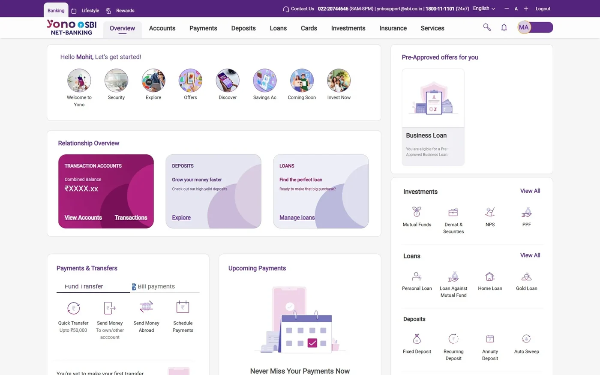
The method
Solve it once at the anchor, and forty products inherit the answer.
A forty-product portfolio cannot be designed forty times. It has to be designed a handful of times, at the journeys that set the precedent, then governed so the rest conform. The expensive part is not the drawing. It is clearing one pattern through compliance, risk and eleven stakeholder teams so nobody has to clear it again.
Selected work
Four case studies2024 — Present · State Bank of India
YONO 2.0, insurance vertical
India's largest bank needed insurance to move out of the branch. Rather than draw forty journeys, I designed the handful the rest of the portfolio could inherit, then audited every one of them for consistency.
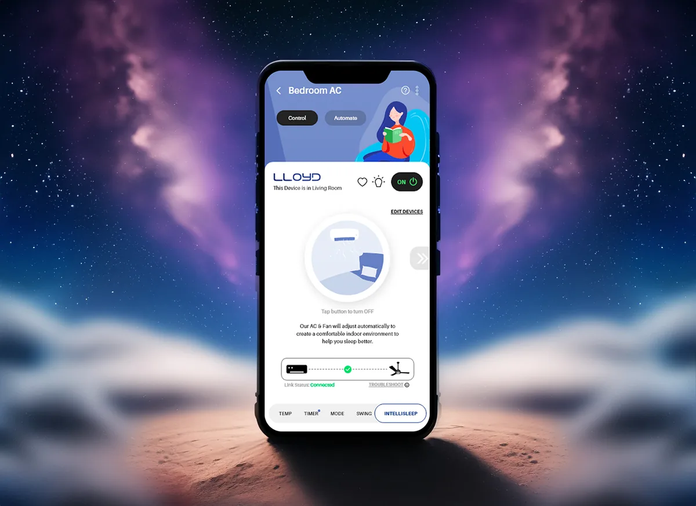
2023 · M.Des thesis with Havells
Cozy Nights
Sleeping through an Indian summer is a control problem, not a comfort one. Coupling the air conditioner and the fan inside one app cut energy use 18% at equal comfort.
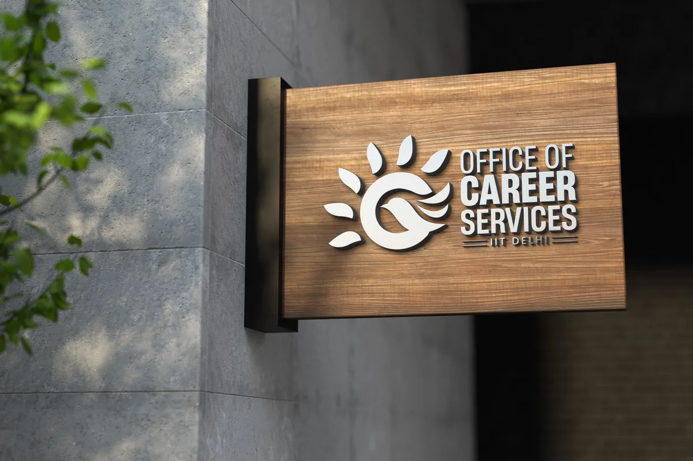
2022 · IIT Delhi
Office of Career Services
The institute's placement office was using a mark borrowed from the IIT Delhi seal. I gave it an identity of its own — a starling rising off a sun — unveiled by the Director and adopted across the office.
2025 — Present · Self-initiated
Global Adaptive Design System
Most component libraries quietly assume left-to-right and a laptop. This one holds its shape in Arabic, Hebrew and vertical Japanese, across four device tiers.
Off the clock
Research, teaching and craft — drag or hover to browse-
R&D
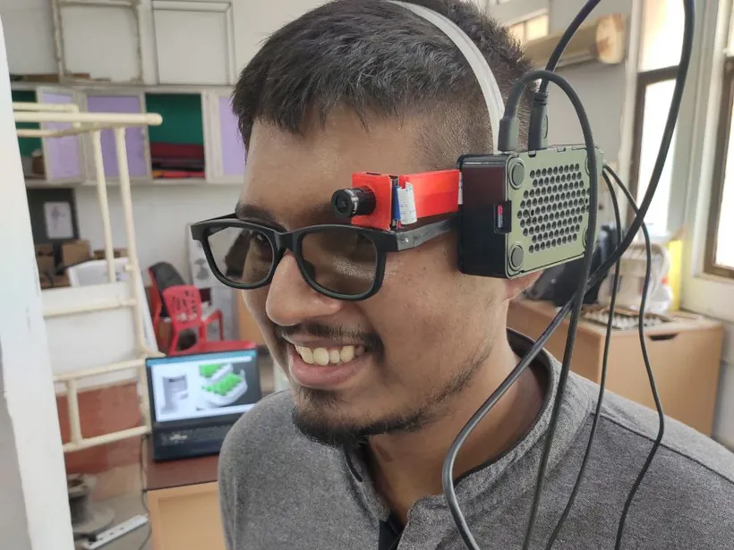
AI vision glassesA vision-powered wearable I prototyped that reminds you to rest your eyes. Featured on the IIT Delhi prospectus. -
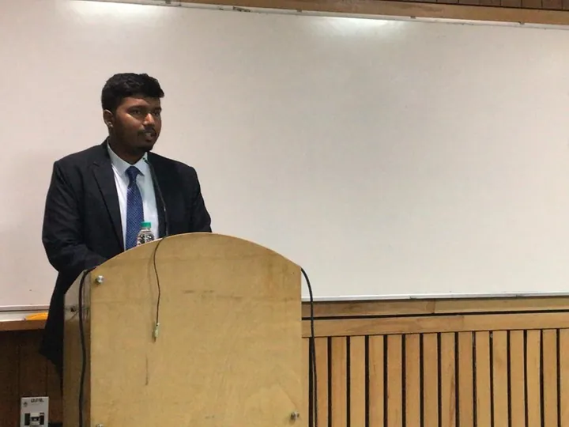
TeachingCEED and design-entrance mentoring. 35 mentees into IITs and NIDs so far. -
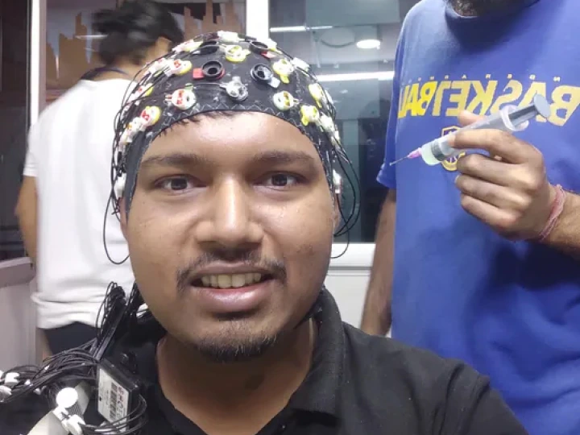
Neuro methodsUnder the EEG rig for a UX study at IIT Delhi, long enough to learn what it can measure and what it can't. -
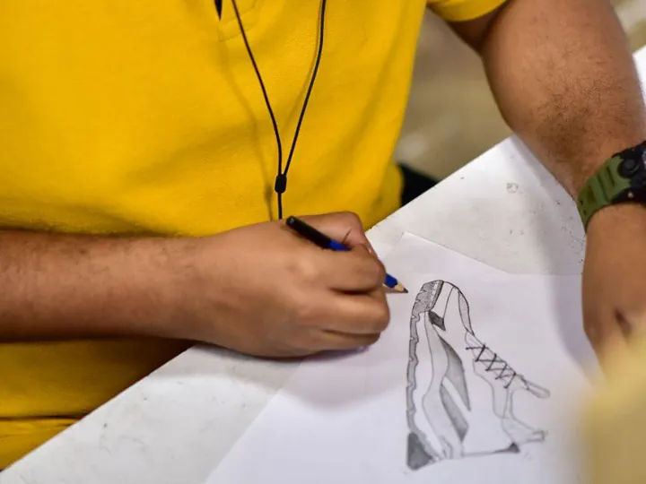
SketchbookEverything still starts on paper before it reaches Figma. -
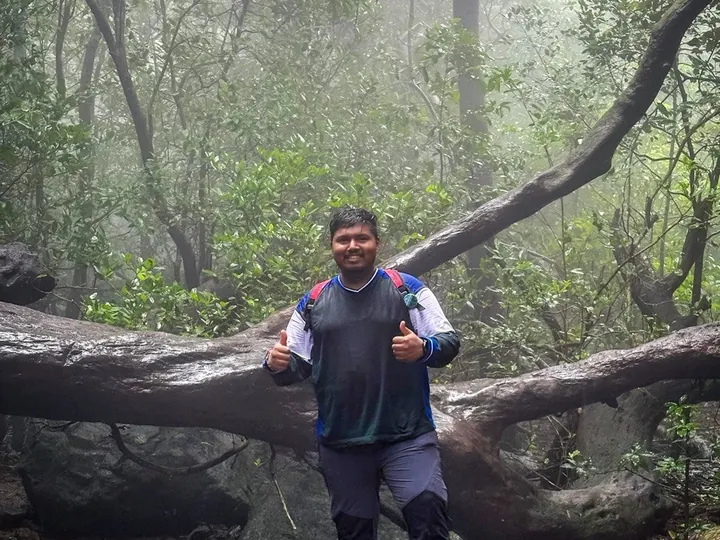
TrailsSahyadri monsoon treks when the city gets too loud. -
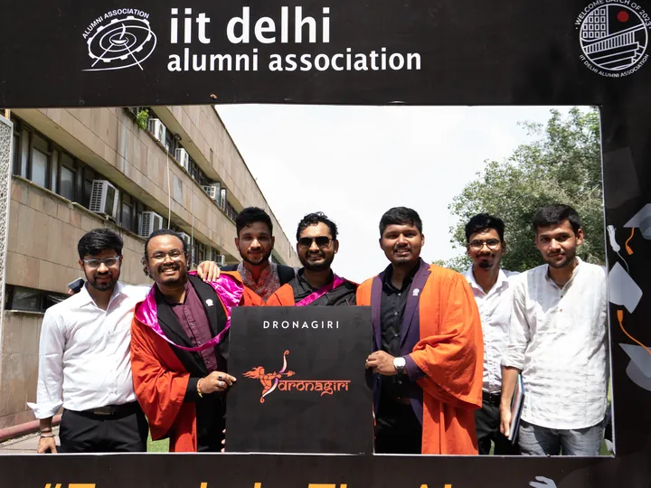
IIT Delhi, 2023M.Des convocation with the cohort. -
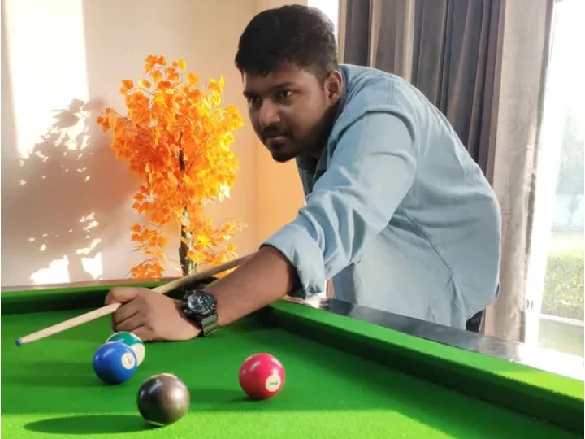
Cue sportsA frame of pool to reset between problems.

About
I came to design through an information technology degree, which is probably why I am comfortable in the part of the job most designers avoid: regulatory review, stakeholder governance, and the question of what actually ships.
An M.Des from IIT Delhi in between. My leverage comes from finding the one pattern that solves thirty problems, rather than solving them one at a time.
- LearningRussian, day 275 on Duolingo. No plans to stop.
- WritingOccasional pieces on AI interaction as a design problem.
- NextDesign-led transformation work. Open to relocation.